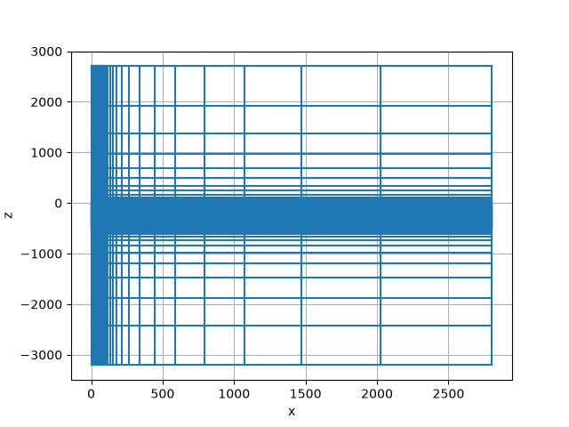
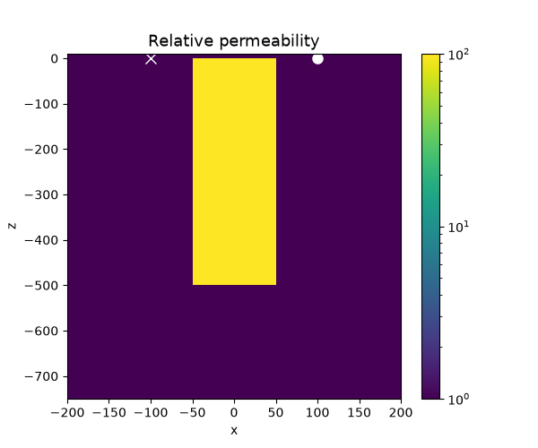
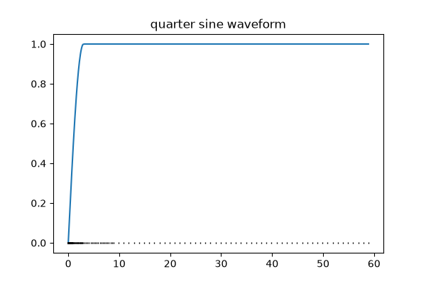
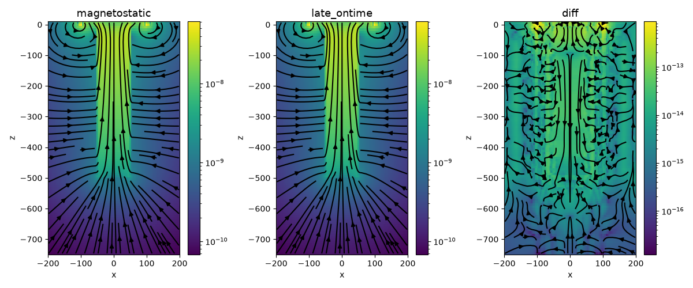

Note
Go to the end to download the full example code.
EM: TDEM: Permeable Target, Inductive Source#
In this example, we demonstrate 2 approaches for simulating TDEM data when a permeable target is present in the simulation domain. In the first, we use a step-on waveform (QuarterSineRampOnWaveform) and look at the magnetic flux at a late on-time. In the second, we solve the magnetostatic problem to compute the initial magnetic flux so that a step-off waveform may be used.
A cylindrically symmetric mesh is employed and a circular loop source is used
Model Parameters#
Here, we define our simulation parameters. The target has a relative permeability of 100 \(\mu_0\)
target_mur = 100 # permeability of the target
target_l = 500 # length of target
target_r = 50 # radius of the target
sigma_back = 1e-5 # conductivity of the background
radius_loop = 100 # radius of the transmitter loop
Mesh#
Next, we create a cylindrically symmteric tensor mesh
csx = 5.0 # core cell size in the x-direction
csz = 5.0 # core cell size in the z-direction
domainx = 100 # use a uniform cell size out to a radius of 100m
# padding parameters
npadx, npadz = 15, 15 # number of padding cells
pfx = 1.4 # expansion factor for the padding to infinity in the x-direction
pfz = 1.4 # expansion factor for the padding to infinity in the z-direction
ncz = int(target_l / csz) # number of z cells in the core region
# create the cyl mesh
mesh = discretize.CylindricalMesh(
[
[(csx, int(domainx / csx)), (csx, npadx, pfx)],
1,
[(csz, npadz, -pfz), (csz, ncz), (csz, npadz, pfz)],
]
)
# put the origin at the top of the target
mesh.x0 = [0, 0, -mesh.h[2][: npadz + ncz].sum()]
# plot the mesh
mesh.plot_grid()

<Axes: xlabel='x', ylabel='z'>
Assign physical properties on the mesh
mur_model = np.ones(mesh.nC)
# find the indices of the target
x_inds = mesh.gridCC[:, 0] < target_r
z_inds = (mesh.gridCC[:, 2] <= 0) & (mesh.gridCC[:, 2] >= -target_l)
mur_model[x_inds & z_inds] = target_mur
mu_model = mu_0 * mur_model
sigma = np.ones(mesh.nC) * sigma_back
Plot the models
xlim = np.r_[-200, 200] # x-limits in meters
zlim = np.r_[-1.5 * target_l, 10.0] # z-limits in meters. (z-positive up)
fig, ax = plt.subplots(1, 1, figsize=(6, 5))
# plot the permeability
plt.colorbar(
mesh.plot_image(
mur_model,
ax=ax,
pcolor_opts={"norm": LogNorm()}, # plot on a log-scale
mirror=True,
)[0],
ax=ax,
)
ax.plot(np.r_[radius_loop], np.r_[0.0], "wo", markersize=8)
ax.plot(np.r_[-radius_loop], np.r_[0.0], "wx", markersize=8)
ax.set_title("Relative permeability", fontsize=13)
ax.set_xlim(xlim)
ax.set_ylim(zlim)

(-750.0, 10.0)
Waveform for the Long On-Time Simulation#
Here, we define our time-steps for the simulation where we will use a waveform with a long on-time to reach a steady-state magnetic field and define a quarter-sine ramp-on waveform as our transmitter waveform
ramp = [
(1e-5, 20),
(1e-4, 20),
(3e-4, 20),
(1e-3, 20),
(3e-3, 20),
(1e-2, 20),
(3e-2, 20),
(1e-1, 20),
(3e-1, 20),
(1, 50),
]
time_mesh = discretize.TensorMesh([ramp])
# define an off time past when we will simulate to keep the transmitter on
off_time = 100
quarter_sine = TDEM.Src.QuarterSineRampOnWaveform(
ramp_on=np.r_[0.0, 3], ramp_off=off_time - np.r_[1.0, 0]
)
# evaluate the waveform at each time in the simulation
quarter_sine_plt = [quarter_sine.eval(t) for t in time_mesh.gridN]
fig, ax = plt.subplots(1, 1, figsize=(6, 4))
ax.plot(time_mesh.gridN, quarter_sine_plt)
ax.plot(time_mesh.gridN, np.zeros(time_mesh.nN), "k|", markersize=2)
ax.set_title("quarter sine waveform")

Text(0.5, 1.0, 'quarter sine waveform')
Sources for the 2 simulations#
We use two sources, one for the magnetostatic simulation and one for the ramp on simulation.
# For the magnetostatic simulation. The default waveform is a step-off
src_magnetostatic = TDEM.Src.CircularLoop(
[],
location=np.r_[0.0, 0.0, 0.0],
orientation="z",
radius=100,
)
# For the long on-time simulation. We use the ramp-on waveform
src_ramp_on = TDEM.Src.CircularLoop(
[],
location=np.r_[0.0, 0.0, 0.0],
orientation="z",
radius=100,
waveform=quarter_sine,
)
src_list_magnetostatic = [src_magnetostatic]
src_list_ramp_on = [src_ramp_on]
Create the simulations#
To simulate magnetic flux data, we use the b-formulation of Maxwell’s equations
survey_magnetostatic = TDEM.Survey(source_list=src_list_magnetostatic)
survey_ramp_on = TDEM.Survey(src_list_ramp_on)
prob_magnetostatic = TDEM.Simulation3DMagneticFluxDensity(
mesh=mesh,
survey=survey_magnetostatic,
sigmaMap=maps.IdentityMap(mesh),
time_steps=ramp,
)
prob_ramp_on = TDEM.Simulation3DMagneticFluxDensity(
mesh=mesh,
survey=survey_ramp_on,
sigmaMap=maps.IdentityMap(mesh),
time_steps=ramp,
)
Run the long on-time simulation#
--- Running Long On-Time Simulation ---
/usr/share/miniconda/envs/simpeg-test/lib/python3.11/site-packages/scipy/sparse/_construct.py:543: FutureWarning: Input has data type int64, but the output has been cast to float64. In the future, the output data type will match the input. To avoid this warning, set the `dtype` parameter to `None` to have the output dtype match the input, or set it to the desired output data type.
Note: In Python 3.11, this warning can be generated by a call of scipy.sparse.diags(), but the code indicated in the warning message will refer to an internal call of scipy.sparse.diags_array(). If that happens, check your code for the use of diags().
A = diags_array(diagonals, offsets=offsets, shape=shape, dtype=dtype)
/usr/share/miniconda/envs/simpeg-test/lib/python3.11/site-packages/geoana/spatial.py:128: RuntimeWarning: invalid value encountered in multiply
vec[..., 0] * np.cos(grid[..., 1]) - vec[..., 1] * np.sin(grid[..., 1]),
... done. Elapsed time 1.2325007915496826
Compute Magnetostatic Fields from the step-off source#
prob_magnetostatic.mu = mu_model
prob_magnetostatic.model = sigma
b_magnetostatic = src_magnetostatic.bInitial(prob_magnetostatic)
Plot the results#
def plotBFieldResults(
ax=None,
clim_min=None,
clim_max=None,
max_depth=1.5 * target_l,
max_r=100,
top=10.0,
view="magnetostatic",
):
if ax is None:
plt.subplots(1, 1, figsize=(6, 7))
assert view.lower() in ["magnetostatic", "late_ontime", "diff"]
xlim = max_r * np.r_[-1, 1] # x-limits in meters
zlim = np.r_[-max_depth, top] # z-limits in meters. (z-positive up)
clim = None
if clim_max is not None and clim_max != 0.0:
clim = clim_max * np.r_[-1, 1]
if clim_min is not None and clim_min != 0.0:
clim[0] = clim_min
if view == "magnetostatic":
plotme = b_magnetostatic
elif view == "late_ontime":
plotme = b_ramp_on
elif view == "diff":
plotme = b_magnetostatic - b_ramp_on
cb = plt.colorbar(
mesh.plot_image(
plotme,
view="vec",
v_type="F",
ax=ax,
range_x=xlim,
range_y=zlim,
sample_grid=np.r_[np.diff(xlim) / 100.0, np.diff(zlim) / 100.0],
mirror=True,
pcolor_opts={"norm": LogNorm()},
)[0],
ax=ax,
)
ax.set_title("{}".format(view), fontsize=13)
ax.set_xlim(xlim)
ax.set_ylim(zlim)
cb.update_ticks()
return ax
fig, ax = plt.subplots(1, 3, figsize=(12, 5))
for a, v in zip(ax, ["magnetostatic", "late_ontime", "diff"]):
a = plotBFieldResults(ax=a, clim_min=1e-15, clim_max=1e-7, view=v, max_r=200)
plt.tight_layout()

Print the version of SimPEG and dependencies#
plt.show()
Report()
Total running time of the script: (0 minutes 7.573 seconds)
Estimated memory usage: 332 MB